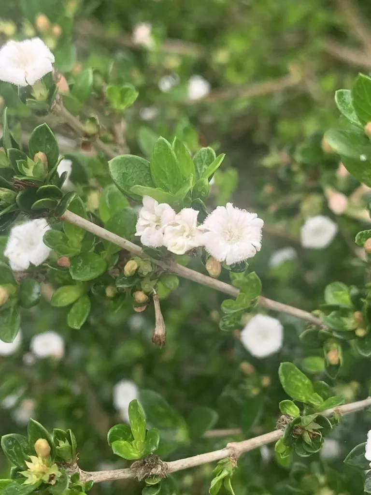

灌木与花木 · 植物界
六月雪 Serissa japonica

茜草科常绿小灌木，夏季开白色小花，花量繁密如雪，耐修剪，是南方庭院与盆景常见的优良观花植物。
- 分类
- 门被子植物门纲木兰纲目龙胆目科茜草科属六月雪属
- 栖息环境
- 山坡林下、溪边与庭院，喜温暖湿润和半阴
- 地理分布
- 中国长江以南各地；日本有分布
- 保护级别
- 暂无评估；中国未列入国家重点保护野生植物名录
物种志
六月雪为茜草科六月雪属常绿小灌木，高 30–100 厘米，分枝密集，幼枝被短柔毛。叶对生，卵形至披针形，全缘。花单生或数朵簇生于叶腋，花冠漏斗状，白色，花径约 1 厘米，花期 5–7 月；果实为核果，球形，果期 8–9 月。
六月雪原产中国长江以南及日本，生于山坡林下与溪边，各地庭院广泛栽培。它喜温暖湿润、半阴的环境，耐寒性一般，适宜疏松肥沃、排水良好的土壤。夏季白花繁密如雪，故名六月雪；耐修剪，是南方庭院、花坛与盆景常见的观花植物。栽培以扦插和分株繁殖为主，可修剪成各种造型；北方盆栽冬季需移入室内，避免低温冻害。
形态与习性
- 株高30–100 厘米，分枝密集
- 花期5–7 月，花白色、径约 1 厘米
- 果期8–9 月，核果球形
- 光照喜半阴，也耐散射光
- 水分喜湿润，忌积水
- 土壤疏松肥沃、排水良好的土壤
- 主要用途庭院观花、花坛与盆景造型
趣味知识
- 六月雪夏季开白色小花，花量繁密，远看像落了一层雪。
- 它耐修剪，是制作盆景和造型的常用树种。
- 六月雪的根、茎、叶可入药，有清热解毒之效。
- 北方盆栽冬季需移入室内，避免低温冻害。